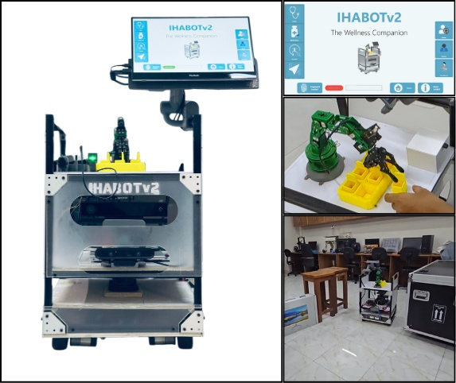
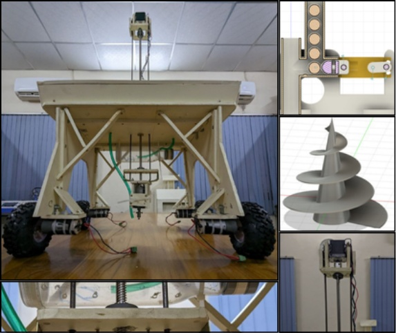
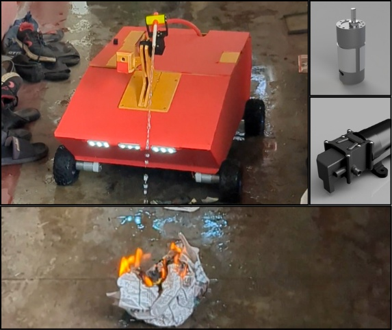
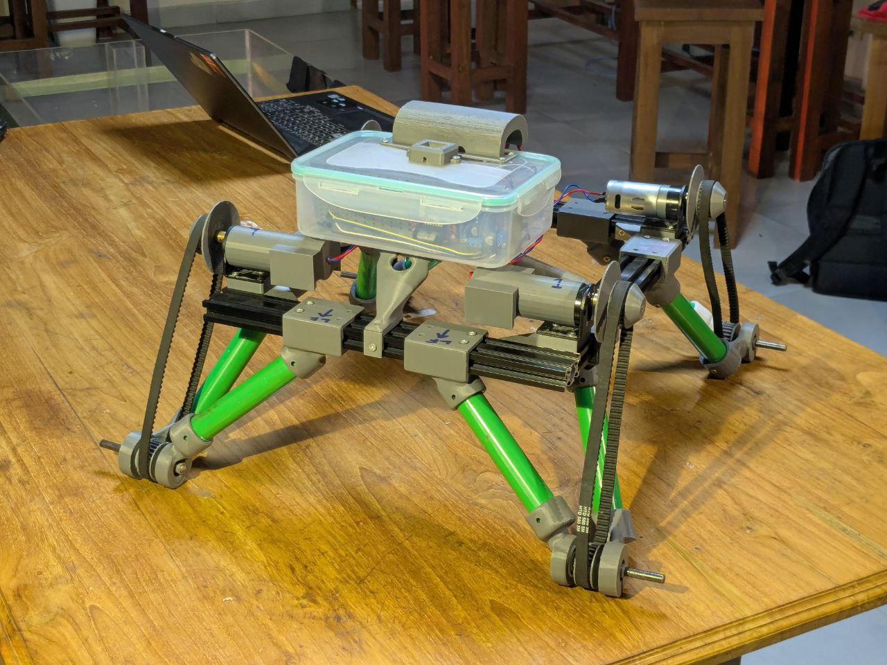
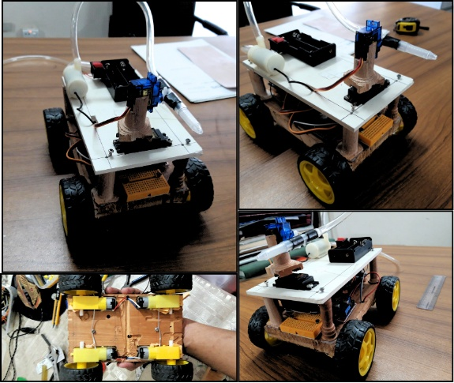

Robotics Projects
As a robotics engineer, I've had the privilege of working on diverse projects ranging from autonomous navigation systems to medical assistance robots. My passion lies in creating intelligent systems that can interact with and adapt to their environment, bridging the gap between digital intelligence and physical action.
From designing mechanical systems to programming complex control algorithms, each project represents a step forward in my journey to build robots that can make a meaningful impact on people's lives.
Featured Robotics Projects

IHABOTv2
Bangladesh's first intelligent hospital assistant robot, featuring autonomous navigation, rehabilitation monitoring, and medicine delivery.

AgRover
A semi-autonomous farming bot for precision agriculture.

FireFightingRobot
Large scale fire fighting robot with remote control and CAD design.

AmphiBot
Amphibious trash collection robot with unified drive system for seamless land and water operation.

Small Firefighting Robot
A small, Bluetooth-controlled firefighting robot from our first semester.